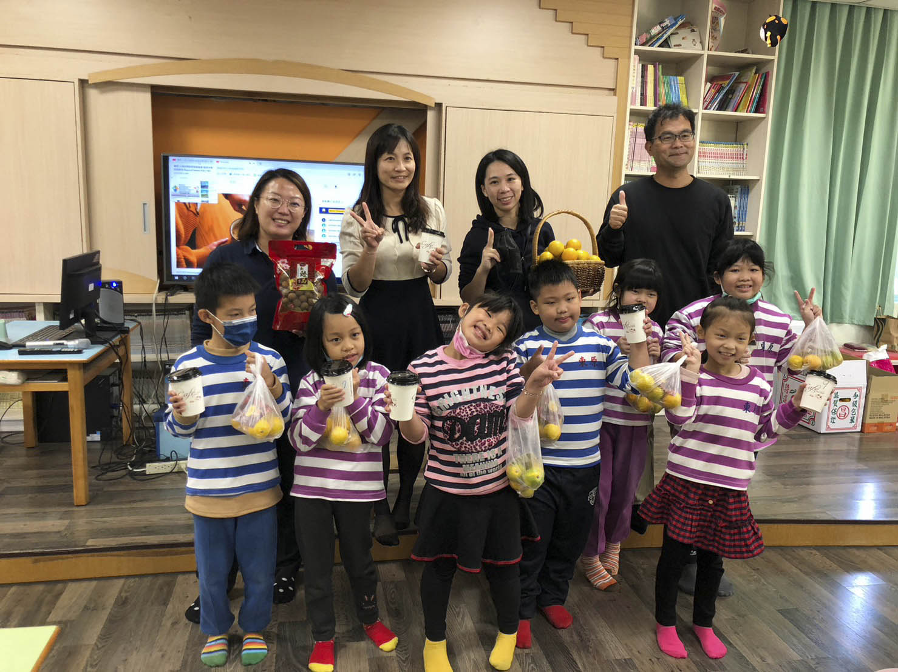

國內行銷推廣活動（圖／農糧署）

媒合優質國產柳橙外銷中國大陸以外市場，包含加拿大、香港、新加坡等國家，目標200公噸，實際執行216公噸。
輔導聯盟成員辦理教育訓練1場次，並透過共同品牌及分級包裝，提升柳橙品質及品牌形象；柳橙季辦理柳橙行銷記者會5場次及國小學童食農教育4場次，鼓勵消費者多加選購國產優質柳橙，目標11,000公噸，實際執行12,200公噸。
向契作農戶收購柳橙並落實分級，將次級品加工製作果汁，提升柳橙附加價值，目標6,000公噸，實際執行7,178公噸。
1.截至111年底柳橙產銷履歷面積291.55公頃，較110年底增加53.49公頃。
2.柳橙行銷記者會5場。
3.共同品牌及分級包裝1式。
4.食農教育與教育講習5場。